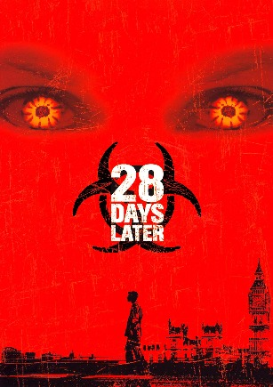

28 Days Later
Poster
Source: characterprofile.fandom.com
Colors: #000205, #2A160B, #871B18, #FF090A, #FF9006
Summary
A group of misguided animal rights activists free a caged chimp infected with the "Rage" virus from a medical research lab. When London bike courier Jim (Cillian Murphy) wakes up from a coma a month after, he finds his city all but deserted. On the run from the zombie-like victims of the Rage, Jim stumbles upon a group of survivors, including Selena (Naomie Harris) and cab driver Frank (Brendan Gleeson), and joins them on a perilous journey to what he hopes will be safety.
Actors
- Cillian Murphy as Jim
- Naomie Harris as Selena
- Brendan Gleeson as Frank
- Megan Burns as Hannah
- Christopher Eccleston as Major Henry West
- Noah Huntley as Mark
- Stuart McQuarrie as Sergeant Farrell
- Ricci Harnett as Corporal Mitchell
- Leo Bill as Private Jones
- Luke Mably as Private Clifton
- Junior Laniyan as Private Bell
- Ray Panthaki as Private Bedford
- Sanjay Rambaruth as Private Davis
- Marvin Campbell as Private Mailer